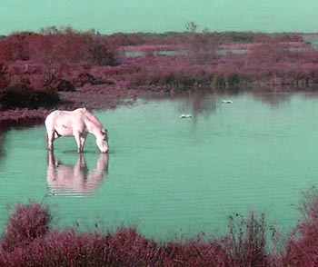

Dernière découverte : le dahu sait nager !

Première
observation
observation
Fiche d'observation
- Date
- Novembre 2002
- Heure
- 5h du matin
- Lieu
- Étang de Vaccarès
- Durée observée
- Environ 1 minute
La photo ci-dessous date de novembre 2002 : c'est la seule qui montre des dahus en train de nager ! Elle a été prise à 5 heures du matin, en très faible lumière, avec un appareil spécial à amplification de luminosité (d'où la couleur verdâtre). Je l'ai prise moi-même, après les avoir observés pendant 30 minutes environ se promener au bord de l'étang. Si je ne les avais pas vus avant, je ne le croirais pas, car personne jusqu'ici n'a rapporté avoir vu des dahus nager. Peut-être leurs ancêtres ont-ils appris au cours de leur descente du Rhône. Les deux dahus, que l'on distingue au fond de l'étang, n'ont nagé que pendant une minute environ.